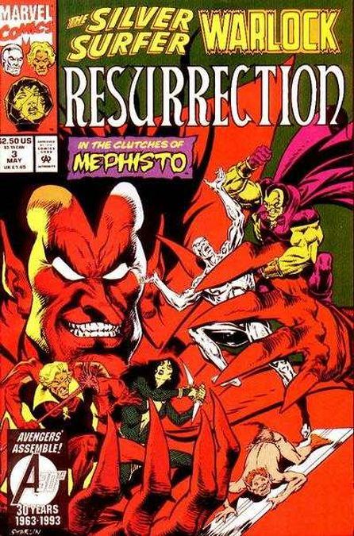
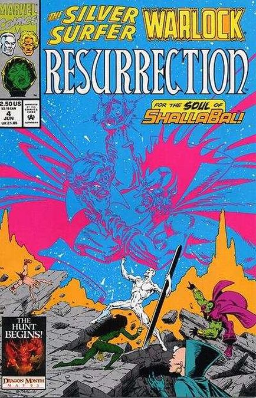
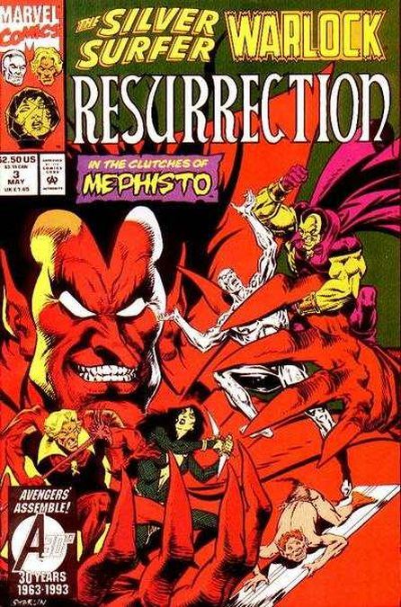
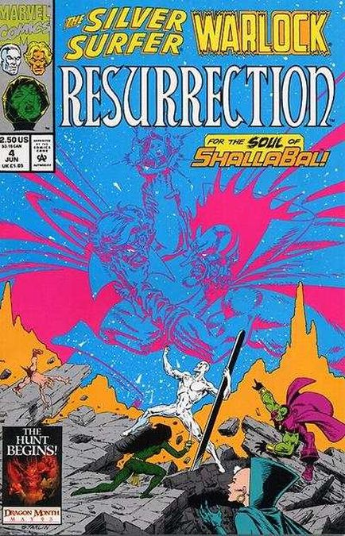

 Cover by Jim Starlin. The Pact, script and art by Jim Starlin; The Silver Surfer thinks about his loss of Shalla Bal during his experience with the Great One; Pip tells him that Adam Warlock would like to see him; Drax helps Pip transport the Surfer to Monster Island to speak with Warlock; Warlock tells the Surfer that he plans to resurrect Shalla Bal; in return, Surfer must do a favor for Warlock sometime in the future; With the Surfer's help, the Soul Gem and the Mind Gem open a portal to another dimension.
It's all-out war...against the legions of Mistress Death! Part 2 of the first Marvel series Jim Starlin has penciled in almost a decade is printed on Fanfare stock. Warlock thinks he's reunited Surfer with Shalla Bal, but it turns out to be a cruel joke. Written by Jim Starlin. Art by Jim Starlin and Terry Austin. Cover by Jim Starlin.
In the clutches of Mephisto! Jim Starlin's masterwork continues when Warlock and Surfer find Shalla Bal's soul in the steely grip of Mephisto. And when the Infinity Watch tries to loosen it, it only becomes tighter. Written by Jim Starlin. Art by Jim Starlin and Terry Austin. Cover by Jim Starlin.
Mephisto battles Warlock for Shalla Bal's soul! But Mephisto's stakes are higher...he wants the souls of Warlock, the Infinity Watch and the Silver Surfer, too. Written by Jim Starlin. Art by Jim Starlin and Terry Austin. Cover by Jim Starlin.